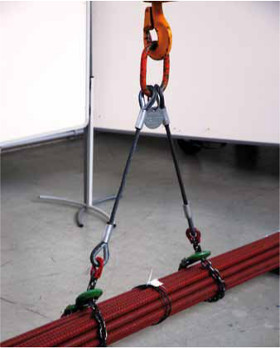
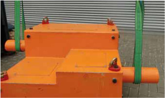

6. Welches Anschlagmittel wofür?
Für den Lastentransport mit Kranen werden Anschlagmittel und Lastaufnahmemittel verwendet.
Anschlagmittel sind beispielsweise Seile, Ketten, Hebebänder, Rundschlingen. Mit ihnen kann die Last unmittelbar mit dem Tragmittel des Kranes, beispielsweise mit dem Kranhaken, verbunden werden.
Lastaufnahmemittel sind Einrichtungen zur Aufnahme von Lasten, z. B. Hebeklemmen, Zangen, Greifer, Lasthebemagnete, C-Haken, Vakuumheber, Traversen.
Die Lastaufnahmemittel werden entweder unmittelbar oder mit Hilfe von Anschlagmitteln mit dem Tragmittel des Kranes verbunden.
In dieser Druckschrift befassen wir uns mit den Anschlagmitteln, den vielseitigen Werkzeugen des Anschlägers, den Traversen und den Blechhebeklemmen. Die Auswahl des richtigen Anschlagmittels ist einerseits eine Aufgabe, die bereits der Betriebsmittelkonstrukteur oder aber der Fertigungsplaner übernehmen sollte, andererseits ist es auch häufig der Anschläger selbst, der sich unter den vorhandenen Anschlagmitteln das geeignete aussuchen soll.

Bild 6-1: Kombination Seil/Kette zur Schonung der Drahtseile
Geeignet sind:
- Seile
für Lasten mit glatten, öligen oder rutschigen Oberflächen sowie Hakenseile für die Verbindung zwischen dem Kranhaken und den Ösen des Ladegutes.
- Ketten
für heißes Material und Lasten mit nicht rutschigen Oberflächen sowie scharfkantige Träger, Brammen oder Profile. Hakenketten dienen zur Verbindung des Kranhakens mit den Ösen der Last.
- Kombination Seil/Kette (Bild 6-1)
für den Transport von Profilstahl und auf Baustellen, wenn mit dem mittleren
Bereich des Anschlagmittels, nämlich der überdimensionierten Kette,
scharfkantige Lasten umfasst werden sollen und das Seil zum Durchstecken unter
den Lasten verwendet wird. Montierte Anschlagmittel müssen vor der ersten
Benutzung durch eine befähigte Person geprüft werden (§ 10 Abs. 1 BetrSichV).
- Hebebänder und Rundschlingen
für Lasten mit besonders rutschiger oder empfindlicher Oberfläche, z. B. Walzen, Wellen, Fertigteile, lackierte Teile (Bild 6-2).
- Naturfaserseile und Chemiefaserseile
für Lasten mit empfindlicher Oberfläche und für relativ leichte Lasten, z. B. Rohre, Heizungs-/Lüftungsteile, Teile mit druckempfindlicher Oberfläche.
Nicht geeignet sind:
- Seile
für scharfkantiges oder heißes Material.
- Ketten
für Lasten mit glatten oder rutschigen Oberflächen.
- Hebebänder und Rundschlingen
für scharfkantige oder heiße Lasten.

Bild 6-2: Hebebänder sind oberflächenschonend